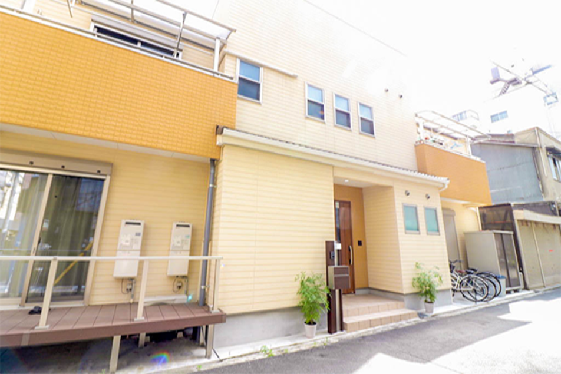
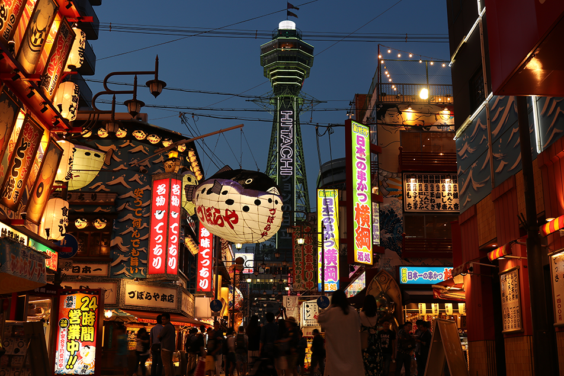
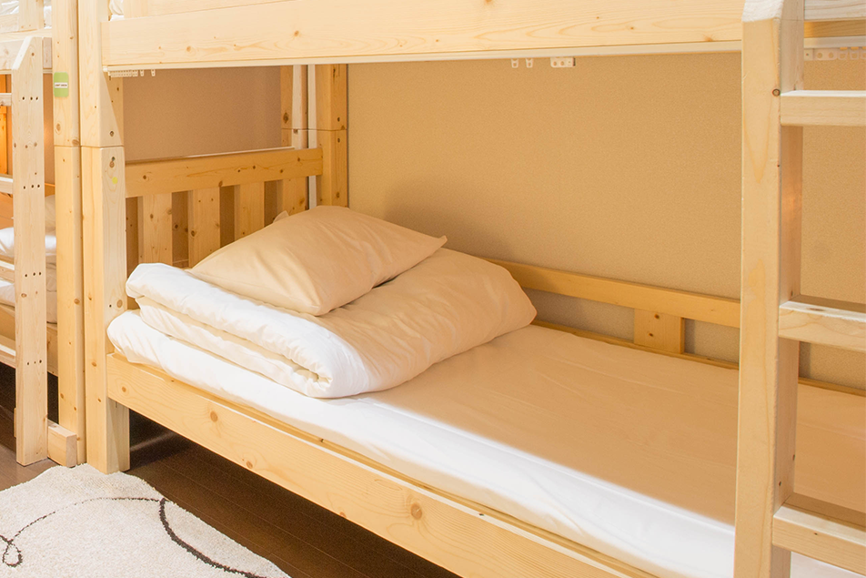

天下の台所、大阪の中心から徒歩15分にひっそりと佇むSakura Japanese House。 繁華街にアクセスも良く、観光にはぴったり。部屋の中は、自分の家に帰ってきたような感覚に陥ることができる、リラックスした空間。 ゆっくりとお過ごしください。



Sakura Japanses Houseは、大阪の中心地に位置しています。なんば、道頓堀まで徒歩15分、グリコまでは20分で着くことができます。 また、京都には、大阪メトロ堺筋線を利用すれば、乗り換えなしで行くことできます。 奈良方面には、最寄りの近鉄日本橋駅を利用し、向かうことも可能です。

一軒家を貸切なので、周囲を気にせず過ごせるハウスです。1Fには、大人数がくつろぐことができるリビング。2Fには、和室と寝室が2つ。 また、大人数を受け入れるために、シャワーは２つ。トイレは、1Fに２つ。２Fに2つの合計4つをご用意しております。

住所 大阪市中央区日本橋２−１８−１
050-0000-0000
info@*******